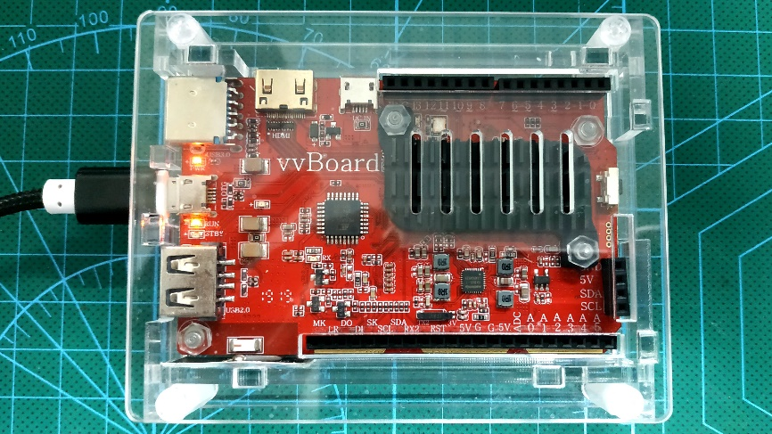
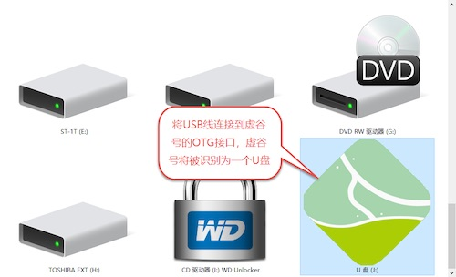
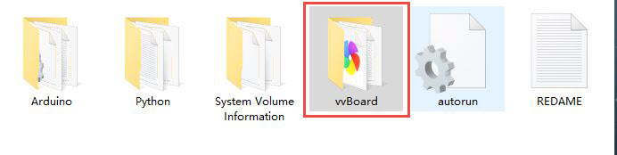

1. 快速入门¶
当你拿到一块全新的虚谷号，不要急着找显示器，接鼠标和键盘。只需要一条USB线，我们就可以使用U盘、无线等模式进行编程。即插即用、快速上手，这是虚谷号研发团队的追求。只有这样，虚谷号才算得上一块为中小学教学量身定做的开源硬件。
1.1. 虚谷号能做什么¶
虚谷号的用户群体是高年级的学生，是学生熟悉了掌控板、Arduino 或者 micro:bit 等开源硬件之后，希望进一步学习而选择的开源硬件。因此，在创客教育方面有“掌控生虚谷”的说法。
掌控板和 Arduino 都是属于单片机，功能和算力都有限，做不了太复杂的 工作，比如 Arduino、micro:bit 连上网都做不到，更不要说体验或者学习人工智能了。虽然借助于一些类似 AI 摄像头的扩展模块，Arduino 也能做一些智能识别的工作，那毕竟很有限。虚谷号则定位在物联网、人工智能这两个方面， 使用标准的 Python 语言来控制硬件，和高中新教材完全一致。
一般来说，虚谷号的用途可以分为三大部分：
Python编程：学习Python要装太多的库，借助虚谷号可以不用装任何软件，利用浏览器就能学习。
人工智能体验和编程：虚谷号内置了百度AI开放平台，可以实现很多人工智能的应用，打开内置的学习笔记，既可以运行体验，也能修改代码在线编程。
物联网和智能家居：作为“虚谷物联”项目的最重要组成部分，虚谷号内置了SIoT服务器和必要的库，加上GPIO功能，做物联网数据采集和远程控制非常方便。
1.2. 推荐学习路径¶
不同用户，学习虚谷号的路径是不同的。
1.已经有树莓派之类的学习经验的用户。
可以直接使用主机模式（电脑模式），用Python代码控制GPIO非常方便。周边扩展和Arduino完全兼容。
2.有Arduino、掌控板编程经验的用户。
建议使用U盘模式和无线模式。你会发现，掌控板的MicroPython语法和虚谷号安全一致，摄像头识别、网络爬虫等任务让掌控板来做很吃力，但虚谷号可以轻松驾驭。
3.零基础用户。
建议使用无线模式，直接从代码编程开始。没有比jupyter更好的学习Python的工具了。
注意： 不管是哪一类用户，我们都强烈推荐使用无线模式给虚谷号编程！
1.3. 从设置Wi-Fi开始¶
你需要准备一个无线路由器，让电脑和虚谷号连接同一个Wi-Fi信号，相互之间可以访问。还需要一条USB线，micro usb口的，就是那种随处可见的手机充电线。
给虚谷号设置Wi-Fi的基本步骤：
1.将USB线连至虚谷号的OTG口（两个USB口中间的那个micro usb口）。
2.稍后，系统会将虚谷号识别为一个U盘。
3.打开vvBoard的文件夹，找到vvBoard_config文件。
4.用记事本编辑vvBoard_config文件。

将SSID和SSID_PSD改为局域网的Wi-Fi账号密码，保存配置文件。
注意： 不能使用那种要网页认证的Wi-Fi，否则你要先接上显示器，用主机模式进行认证！
5.按下虚谷号的RST键，U盘会暂时消失，等再次出现时，vvBoard的文件夹会出现两个新的快捷方式，一个指向jupyter，一个指向SIoT。

注意： 少数用户反馈，接上电脑没有出现U盘，或者配置完Wi-Fi后按下RST键后U盘没有再次出现，断电再接入电脑发现依然没有正常上网。一般来说这是因为USB电流太小引起（虚谷号需要2A的电流才能正常工作），请在电源口接上2A的充电器或者充电宝，即可正常使用。
双击“访问Jupyter”，此时浏览器将打开Jupyter的登录页面，登陆密码为“scope”。在Jupyter的界面下，可以给虚谷号编程、安装软件，更重要的是，可以访问虚谷号内置的课程笔记，快速入门。
如果您希望使用远程桌面工具连接虚谷号，请参考：https://vvboard.readthedocs.io/zh/latest/02.quick/2.2-wifi.html
注： 目前虚谷号仅支持2.4GHz的Wi-Fi。如果Wi-Fi需要二次身份认证（如校园网等），只能通过电脑模式连接，不能用U盘模式配置。在修改完vvBoard_config文件后，如果短按RST键后没有连接成功，可以多尝试几次。如果还不行，可以尝试将虚谷号断电重启，或长按RST键5秒重启。（如果更换Wi-Fi信息，旧版本的固件可能需要格式化U盘，重新初始化信息。）
1.4. 开始Python编程¶
打开Jupyter，访问“vvBoardBook”文件夹，将看到虚谷号中内置很多笔记，这些笔记可以作为课程来使用。

可以看一下由张路、谢作如编写的《Python快速入门教程》，用鼠标选中代码，在代码的下方即可看到运行效果。

1.5. 体验人工智能¶
虚谷号内置了百度AI开放平台，可以实现很多人工智能的应用，打开内置的学习笔记，既可以运行体验，也能修改代码在线编程。

注： 虚谷号中提供了一个公用的百度AI用户，可能受到百度AI平台“申请次数过多”的限制，建议申请一个百度AI平台用户，然后修改代码中的用户参数。
可以用虚谷号体验人工智能和机器学习，虚谷号提供的课程来自浙江教育出版社、人民教育出版社的高中人工智能教材。
1.6. 体验物联网和智能家居¶
虚谷号内置了SIoT服务器和SIoT库，加上GPIO功能，做物联网数据采集和远程控制非常方便。
双击“访问siot”，此时浏览器将打开SIoT的登录页面，登陆账号密码均为“scope”。

关于虚谷物联的更多内容，请访问：https://github.com/vvlink/SIoT
1.7. 关于虚谷号的问和答¶
自从虚谷计划启动以来，常常有朋友问关于虚谷号的一些问题。挑几个最常见的来统一回答：
1.拿到一块全新的虚谷号，开始学习前还要做什么准备？
答：一条USB线，一个Wi-Fi信号，你就可以开始学习了。对了，你的电脑还要装谷歌浏览器。无论是安装软件、安装库、升级固件，都不需要外接鼠 标键盘和显示器，通过USB线都能解决。
2.虚谷号入门需要多少时间？
答：如果有Python基础，那恭喜你，直接入门；如果有Linux基础，那说明早入门了；如果仅仅接触过Arduino、掌控板，那需要花时间熟悉一下开源硬件的代码编程，学习时间是花在学习语言上，不是花在虚谷号上。哪怕从来没有用过虚谷号，在Jupyter课程的支持下，做一个人工智能的简单应用，半小时就可以了。
3.虚谷号有教学课程吗？
答：虚谷号本来就是一台迷你电脑，任何关于linux、Python、PHP之类的课程，都可以是虚谷号的课程。同时，虚谷号自带了Arduino，绝大多数Arduino的课程，也可以直接用在虚谷号上。当然，虚谷号在教学应用方面做了很多优化，内置了常见的库。部分虚谷号测评专家，写了一些基于Jupyter的学习笔记，可以看成是虚谷号的课程。
4.虚谷号适合哪些人使用？
答：虚谷号面向高年级学生，尤其是中学生，或者是小学高年级的学生，重点关注Python的代码编程。你可以将虚谷号看成是一台“Linux电脑+Arduino”，用Linux系统处理复杂的信息，用Arduino来获取传感器信息和控制各种执行器。在虚谷号的帮助下，无论是物联网还是人工智能作品，都可以快速搭建。
5.相对于树莓派，虚谷号的优势在哪里？
虚谷号和树莓派一样，都是迷你电脑。但是虚谷号类似于Arduino和掌控板，作为一个USB设备接上电脑就能编程。这样一来，在机房中学习开源硬件就变得特别简单、方便。而且，虚谷号中内置了常见人工智能框架，方便用户学习AI编程，省去在配置安装各种库方面浪费时间。如果想用大班教学的形式用Python编程学习开源硬件，虚谷号是最好选择，没有之一。